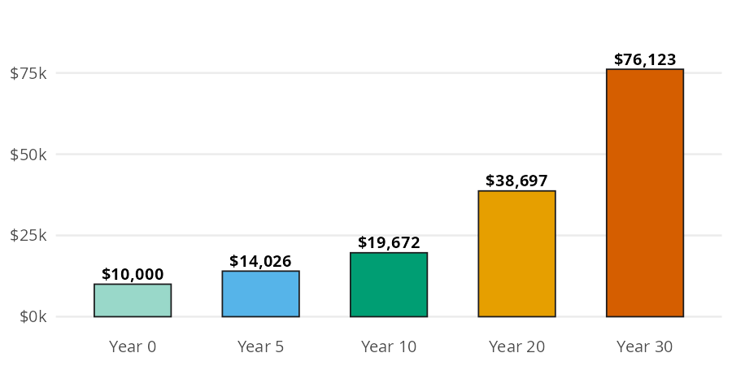
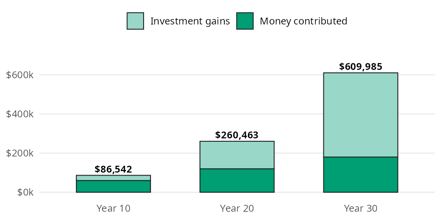
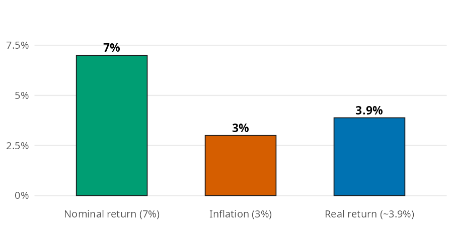

fv_10 = future_value(present_value=10000, rate=0.07, years=10)
fv_1019671.513572895663Investing math is mostly one idea (compounding) applied a few different ways. You want to know what money invested today grows into, how long it takes to double, and what a monthly habit adds up to. You also want to know how much of a return is left once inflation takes its share. In this page I’ll answer those questions with future_value(), rule_of_72(), future_value_series(), and real_return(). The numbers come from the Investing Basics chapter of the book, so you can check every result against it.
All four functions accept arrays and follow the conventions in Get started. Rates are decimals, with one exception: rule_of_72() takes a percent.
| Function | Returns | Units |
|---|---|---|
| future_value() | what a single amount grows to | dollars (rate is a decimal) |
| rule_of_72() | years for money to double | years (annual_return_pct is a percent) |
| future_value_series() | what a regular contribution grows to | dollars (rate is per period) |
| real_return() | the return left after inflation | decimal (0.039 is 3.9%) |
The chapter invests $10,000 at 7% a year. Each year adds 7% to the balance, and the next year’s 7% is applied to that larger balance. Interest earns interest.
Each bar below is the one before it multiplied by the same growth factor. The bars curve upward instead of climbing in a straight line:

future_value() multiplies the starting amount by (1 + rate) once for every year:
After 10 years, $10,000 grows to $19,671.51. That’s almost exactly double, which is what the rule of 72 predicts.
The rule of 72 is a shortcut: divide 72 by the yearly return (as a percent) to estimate the years it takes to double. rule_of_72() is the one function in the package that takes a percent, so 7% goes in as 7:
At 7%, money doubles about every 10.3 years. That matches the bar model: $10,000 at year 0 is close to $20,000 at year 10 and close to $40,000 at year 20.
Most people don’t invest one lump sum. They invest a fixed amount every month. The chapter’s example is $500 a month for 30 years at 7% a year.
Monthly investing builds wealth in two layers: the money you put in, and the growth on everything you’ve already put in. The bar model separates the two:

future_value_series() adds up every contribution and its growth in one step. The rate is the rate per period, so a monthly series uses the yearly rate divided by 12, and periods is the number of months:
fv_series_30 = future_value_series(contribution=500, rate=0.07 / 12, periods=30 * 12)
contributed_30 = 500 * 30 * 12
fv_series_30, contributed_30(609985.4978879723, 180000)After 30 years the account holds about $609,985, and only $180,000 of it is money you put in. The other $429,985 is growth.
A 7% return sounds good, but prices rise too. The chapter sets a 7% nominal return (the number before inflation) against 3% inflation. The real return is what’s left:

The real return isn’t a simple subtraction; it’s a ratio, because both rates compound. real_return() divides one growth factor by the other:
The real return is 3.88%, a little less than the 4% you’d get by subtracting. The result is a decimal, so you can pass it straight into future_value() or future_value_series() to get an answer in today’s dollars.
Array inputs answer several versions of a question in one call. Passing a few returns to rule_of_72(), then growing $10,000 for that many years with future_value(), shows how close the shortcut gets to an exact double:
pcts = [4, 7, 10]
doubling = rule_of_72(annual_return_pct=pcts)
pl.DataFrame({
"return_pct": pcts,
"years_to_double": doubling,
"value": future_value(
present_value=10000, rate=[p / 100 for p in pcts], years=doubling
),
})| return_pct | years_to_double | value |
|---|---|---|
| i64 | f64 | f64 |
| 4 | 18.0 | 20258.165154 |
| 7 | 10.285714 | 20055.483751 |
| 10 | 7.2 | 19862.199199 |
Each value lands within a few hundred dollars of $20,000, so the rule of 72 is a good shortcut for returns in this range.
Passing several horizons to periods reproduces each bar in the contributions bar model, with the money contributed alongside:
years = [10, 20, 30]
pl.DataFrame({
"years": years,
"contributed": [500 * 12 * y for y in years],
"value": future_value_series(
contribution=500, rate=0.07 / 12, periods=[y * 12 for y in years]
),
})| years | contributed | value |
|---|---|---|
| i64 | i64 | f64 |
| 10 | 60000 | 86542.403717 |
| 20 | 120000 | 260463.329913 |
| 30 | 180000 | 609985.497888 |
These functions are for planning, not prediction. A few things they don’t do:
rate is per period, so passing a yearly rate with monthly periods gives a much larger (wrong) answer. A 0% rate returns the sum of the contributions.7, not 0.07). A return of 0 or less raises a ValueError, because money that doesn’t grow never doubles.Back to the $500 a month for 30 years. The $609,985 from earlier is in future dollars. Passing the real return from the inflation section as the monthly rate gives the same account in today’s dollars:
fv_series_today = future_value_series(
contribution=500, rate=real_return(nominal=0.07, inflation=0.03) / 12, periods=360
)
fv_series_today339908.2068683674In today’s dollars the account is worth about $339,908. That’s less than the headline number, but it’s still nearly twice the $180,000 you put in.
Small amounts work the same way. The chapter’s recap invests $50 a month for 30 years at 7%:
60998.54978879723$50 a month becomes about $60,999. The Budgeting page puts a price on spending decisions with the same compounding math in opportunity_cost().
Compounding is the force multiplier behind every investing decision. future_value() grows a single amount, rule_of_72() estimates how long it takes to double, and future_value_series() grows a monthly habit. real_return() takes inflation out of the return, so any of the others can answer in today’s dollars.